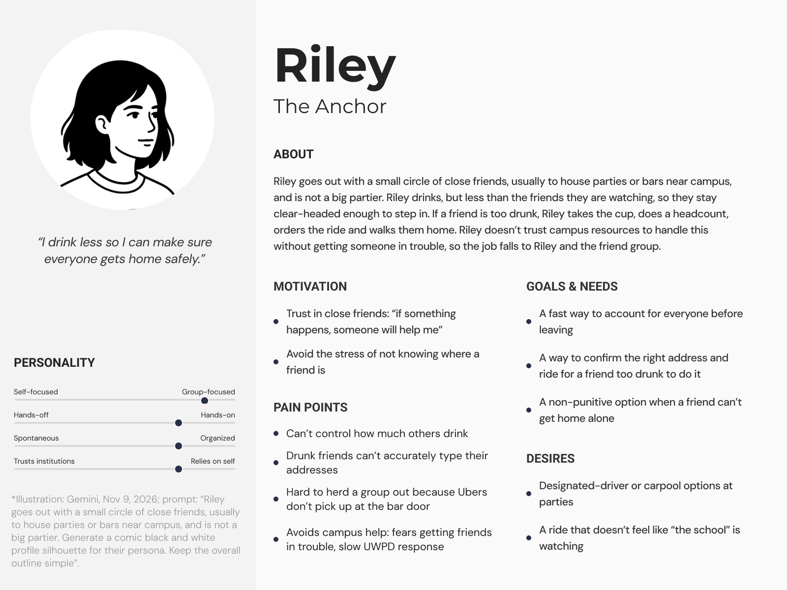
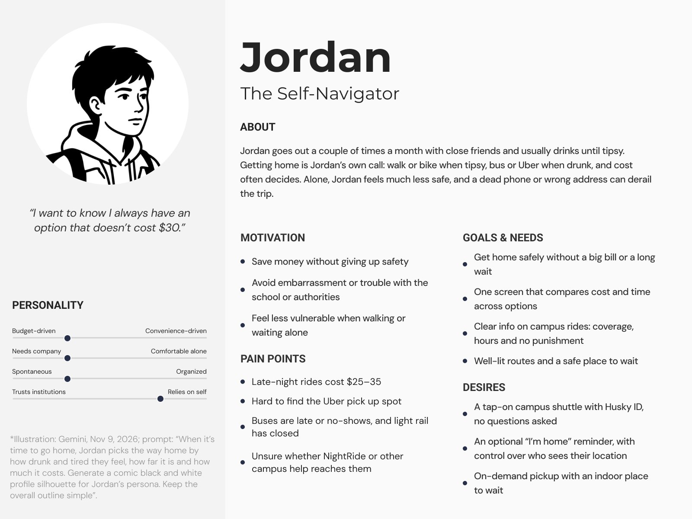
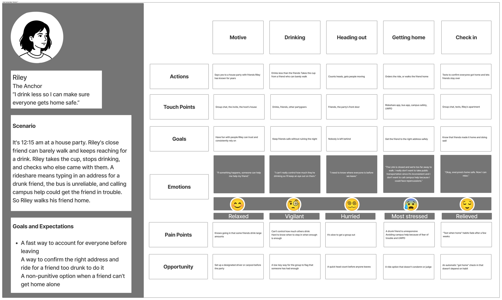

HCDE 302 · Foundations of Human-Centered Design · Fall 2026
Getting home safely: why students skip the help that exists
How might we help UW undergraduates who've been drinking get home safely after parties and social events?
The problem
Late-night trips home after drinking combine several risks: impaired judgment, unreliable transit, phones that are hard to use and streets that don't feel safe. UW already offers services meant to help, like NightRide and campus safety lines. We wanted to understand what actually happens on the way home, and why those services so often go unused.
My role
- Co-designed the interview protocol and its inclusion and exclusion criteria with the team.
- Conducted two of the five interviews and coded both transcripts on my own in FigJam.
- Grouped my codes into individual themes, then worked with the team to merge everyone's themes into the final two.
- Co-wrote the report, including the results and reflection.
Planning
Research questions
- What risks do UW undergraduates face when going home late at night?
- When students become, or encounter, someone who is intoxicated, how comfortable and knowledgeable are they about taking care of themselves or others?
- What challenges do students face using their phones and transportation services after drinking?
Who we talked to
UW students aged 21 or older who had been to a social event with alcohol and had used a rideshare or transit app. We excluded anyone under 21, anyone who wasn't a UW student, and anyone without a history of these events. Everyone was open to any gender, race or economic background.
The protocol
Eight questions, each with a written rationale. They moved from a concrete recent night toward reflection and ideas:
- Tell me about the last time you drank alcohol at a party. How did you get home, and how safe did you feel from 1 to 10?
- How do you choose who you go out with? What safety habits does your group have?
- How do you use your phone to get home after drinking? What's gone wrong?
- What do you know about safety services on campus or in the U District? Have you used them?
- What would you change to make getting home safer?
Because the topic is sensitive, interviews were anonymous. Participants could skip any question, and we asked before recording. Each participant gets a letter-number code, such as A1 or M2.
Interviews
5 interviews · 15–25 minutes · in person and online
We each interviewed students we knew, which made it easier to talk openly about drinking. I interviewed A1, who goes out to bars most weeks with a large group of roommates, and M2, who goes to house parties with one or two close friends. Their nights looked very different, which helped the analysis.
My individual coding
I broke each transcript into quotes, wrote a short code under each one, then grouped the codes into themes for that participant.
“If we're at Earl's on the Ave, then we're walking home… If we're in Cap Hill, we're probably linking. If we're in Ballard, then you have to Uber.”
“When we leave, it's like, everyone's leaving, or if someone's leaving early, then everyone goes with them.”
“Sometimes I'm the one ordering the Uber… I wouldn't say that's always the case.”
“They were like, ‘We'll try to get there if we can.’ And they never showed.”
“If I don't know people that are at the party, it's like, ‘Why am I going?’”
“I had to literally grab my friend's drink out of his hand and chuck it, because he couldn't walk.”
“My bus said that I was going to be a couple minutes late, and then… it drove by me. So I kind of have a 50-50 trust with that app.”
“If it's a UW resource… they're probably under the assumption that they're gonna get in trouble with the school.”
Merging themes as a team
Together we had a dozen narrow themes. Laid side by side, many of them weren't separate problems. One theme was often the cause of another. So we grouped them into two broader themes, each pairing a circumstance with its effect.
Key findings
1. Friends are the safety net, but nobody is in charge of it
Participants said they only step in when a friend shows obvious warning signs, like being unable to walk or losing consciousness. By that point the situation is already serious. Groups have habits, like leaving together, but no one is assigned to look out for everyone, and peer pressure can push drinking past people's limits.
“Sometimes people forget, and then someone asks the next morning if they made it home.” — P4
Most existing safety apps assume people will notice they need help and ask for it. Our findings suggest that's exactly where things break down.
2. The trip home is a series of trade-offs
How students get home depends on distance, cost and how drunk they feel. Each option has a catch. The light rail closes before the bars do, the bus app can't be trusted, Uber's pickup pin keeps moving, and late rides cost $25–35. One participant stayed out an extra hour rather than pay for a ride.
“Every time I've gone to a bar in Capitol Hill, the light rail closes before I can get back.” — D5
3. The services exist, but students don't trust them
NightRide covers many of these needs on paper. But students barely knew how it worked, forgot it existed, or had heard it was unreliable. Others avoided anything tied to the school or police, out of fear of getting themselves or a friend in trouble.
“I feel like a lot more students would be talking about it… a good way to get back without feeling embarrassed or weird about it.” — M2
Personas
We grouped participants by how they behave, not by demographics. Every line in each persona lists the participants it came from, and anything nobody actually said is labeled as an assumption.


Journey map
Riley's night, from saying yes to the party to confirming everyone got home. The map tracks actions, touch points, goals, emotions, pain points and opportunities at each stage. Stress builds at the moment the group tries to leave and peaks on the way home. That's where every option has a catch.

Design direction
Participants want a service that eases fear of consequences and promotes trust through non-direct affiliation with the university. The opportunity is help that's easy to use and judgment-free, like a campus shuttle you tap onto with a Husky ID that doesn't ask who you are, plus tools that help groups check in on each other before the warning signs get serious.
Participants suggested pieces of this themselves: a tap-on shuttle that doesn't ask who you are, one screen that compares rides, flexible pickup spots, and an automatic “I'm home” reminder with control over who sees their location.
Reflection
Five interviews can only show signals, not prove what's true for all students. Our participants were people we knew, most went out with a steady friend group, and none commuted to campus. We read the findings that way and plan to test them.
The hardest part was the thematic analysis. Merging narrow codes into two broad cause-and-effect themes made the overall argument clearer, but it risked losing the details that made each person's story meaningful. We dealt with that by pairing every broad claim with participants' own words, and by citing a source for every line in the personas.
As a team, we also learned that waiting on each other's sections slowed the report down. Next time we'll set a clearer timeline and work in parallel from the start.